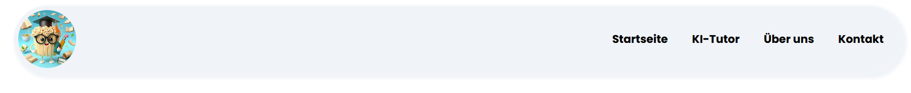

Schritt 1: Zum KI-Tutor navigieren
Fahre mit der Maus zur Navigationsleiste und wähle den Link "KI-Tutor" aus.
Du wirst nun zur KnowledgeNoodle KI-Tutor Seite weitergeleitet.
Du kannst die KI-Tutor Seite alternativ auch über den "Jetzt probieren"-Button auf der Startseite erreichen.
Schritt 2: Mit dem KI-Tutor kommunizieren
Um dem KI-Tutor Fragen zu stellen, musst du in das Eingabefeld deine Frage schreiben.
Danach klickst du auf den Senden-Button, welcher sich rechts im Eingabefeld befindet.
Der KI-Tutor wird nun deine Frage beantworten.
Schritt 3: Löschen des aktuellen Chats
Um den aktuellen Chat mit dem KI-Tutor zu löschen, musst du ganz einfach auf den Papierkorb-Button, welcher sich links neben dem Senden-Button befindet, klicken.